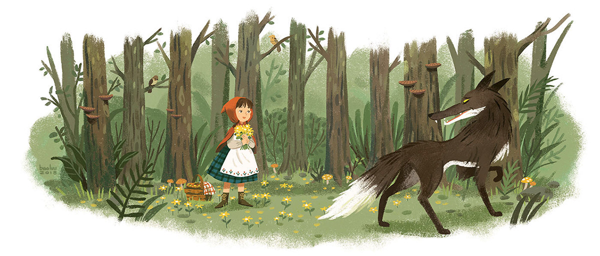

Once upon a time there was a little girl who wore a beautiful red cloak. Her mother, who knew how to sew very well, had made it for her. The girl wore it so often that everyone called her Little Red Riding Hood.
One day, Little Red Riding Hood's mother called her and said,
“Grandmother does not feel very well. I have baked some cookies and I
want you to take them to her.”
“Of course,” said Little Red Riding Hood, putting on her cloak and
filling her basket with the freshly baked cookies.
Before leaving, her mother told her, “Listen to me very well. Stay on
the road and never talk to strangers.”
“I know mother,” said Little Red Riding Hood and left immediately to
Grandma's house.
To get to Grandma's house, Little Red Riding Hood had to cross a path
through the thick forest. On the way, she met a wolf
“Hello little girl. Where are you heading to on this wonderful day?”
the wolf asked
Little Red Riding Hood remembered that her mother
told her not to talk to strangers, but the wolf looked very elegant,
and he was very friendly and polite.
“I'm going to Grandma's
house,” the girl replied. “She is sick and I'm going to take her these
cookies.”
“What a good girl you are!” exclaimed the wolf. “How
far do you have to go?”
“Oh! Grandma lives at the end of the
road,” answered Little Red Riding Hood with a smile.
“I wish you
a very happy day, little girl,” the wolf replied.
The wolf went into the forest. He had a huge appetite and was not as
nice as he appeared. He ran to Grandma's house before Little Red
Riding Hood could arrive. His plan was to eat grandma, Little Red
Riding Hood and all the freshly baked cookies.
The wolf knocked
on Grandma's door. Upon seeing him, Grandma ran away terrified,
leaving behind her shawl. The wolf took the old woman's shawl and then
put on her glasses and night cap. Quickly, he climbed into Grandma’s
bed, covering his nose with the blanket. Soon he heard a knock on the
door:
“Grandma, it's me, Little Red Riding Hood.”
Disguising
his voice to sound like Grandma, the wolf said, “Please, enter my dear
girl. I am in bed.”
Little Red Riding Hood thought that her
grandmother was very sick because she looked very pale and sounded
terrible.
“Oh, dear grandma, what big eyes you have!” she
said.
“All the better to see you with” replied the wolf.
“Oh, dear grandma, what big ears you have!” said Little Red Riding
Hood.
“All the better to hear you with, my dear!” the wolf
whispered.
“Oh, dear grandma, what big teeth you have!” said
Little Red Riding Hood.
"All the better to eat you with!” growled
the wolf.
With these words, the evil wolf threw off the blanket
and jumped out of bed. Scared, Little Red Riding Hood ran to the door.
Just in time, a hunter rushed inside, with Grandma by his side.
At
the sight of the hunter, the wolf jumped out the window and fled in
horror never to be seen again.
Grandma and Little Red Riding Hood
thanked the hunter for saving them from the wolf and everyone ate
cookies and milk. That day Little Red Riding Hood learned an important
lesson: You should never talk to strangers.
The end
